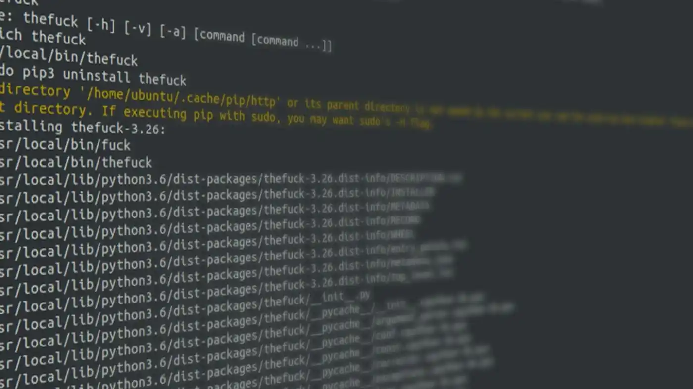
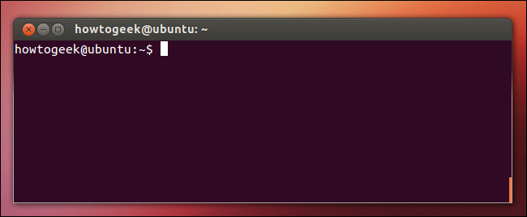
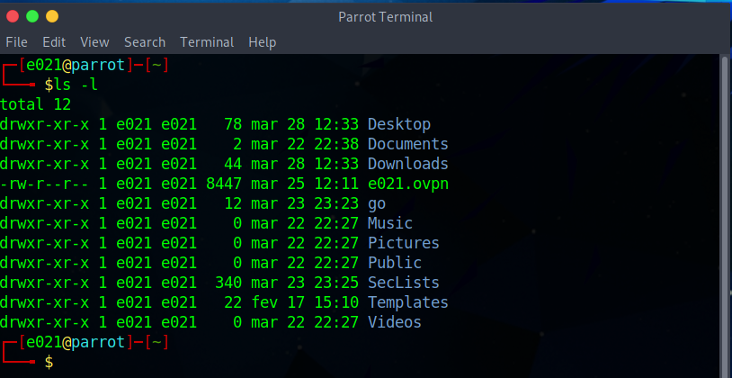
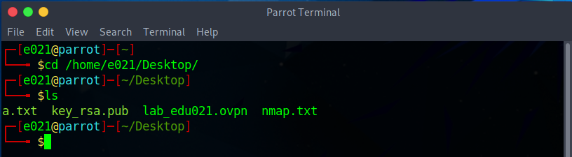
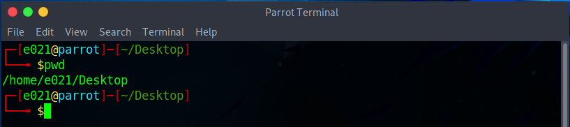
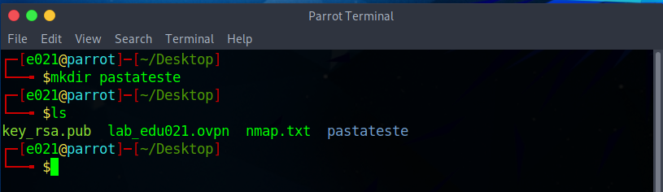
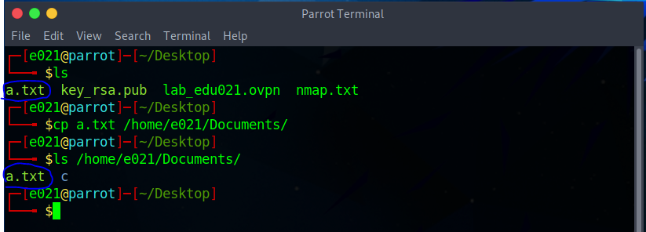
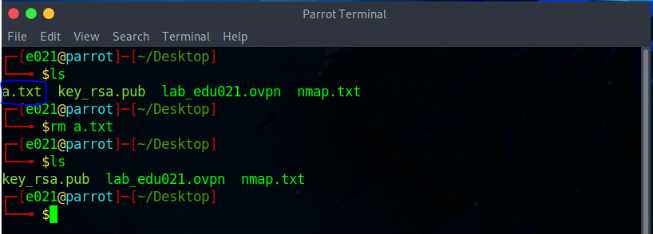

Linha de comando
A linha de comando é uma ferramenta poderosa para interagir com o sistema operacional Linux. A seguir, veremos uma introdução básica à linha de comando do Linux (bash) e alguns comandos essenciais.
Introdução à linha de comando do Linux (bash)
A linha de comando é um ambiente no qual você pode digitar comandos diretamente para executar tarefas no sistema operacional. No Linux, o interpretador de comandos padrão é o bash (Bourne Again SHell).
Para acessar a linha de comando, abra o terminal no seu sistema Linux. Você verá um prompt assim onde pode inserir seus comandos.
Comandos básicos do Linux
Aqui estão alguns comandos básicos que você pode utilizar na linha de comando do Linux:
ls: Lista os arquivos e diretórios no diretório atual.
Exemplo: ls
cd: Navega para um diretório específico.
Exemplo: cd /home/usuario
pwd: Mostra o diretório atual.
Exemplo: pwd
mkdir: Cria um novo diretório.
Exemplo: mkdir novo_diretorio
cp: Copia um arquivo ou diretório.
Exemplo: cp arquivo_origem arquivo_destino
rm: Remove um arquivo.
Exemplo: rm arquivo
Shell scripting: automação de tarefas com scripts
Os scripts no Linux são sequências de comandos armazenados em um arquivo de texto. Eles podem ser utilizados para automatizar tarefas repetitivas ou complexas.
Aqui está um exemplo simples de um script em bash que lista todos os arquivos de um diretório e exibe uma mensagem para cada arquivo encontrado:
Salve o código acima em um arquivo com extensão .sh, como meu_script.sh, e torne-o executável usando o comando chmod +x meu_script.sh. Em seguida, você pode executá-lo digitando ./meu_script.sh no terminal e o resultado será este:
Este é apenas um exemplo simples, mas os scripts em bash podem ser muito mais poderosos e complexos, permitindo automatizar uma ampla variedade de tarefas no Linux.